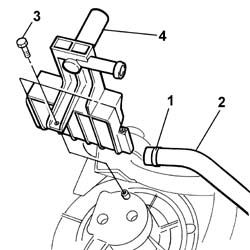
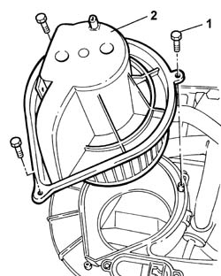

5040C34 FAN MOTOR - R+R WITH AIR CONDITIONER BOX REMOVED
- Path
- Procedures > 50 AUXILIARY UNITS > 5040 AIR CONDITIONING CASING AND COMPONENTS > 5040C AIR CONDITIONER BOX AND COMPONENTS > 5040C34 FAN MOTOR - R+R WITH AIR CONDITIONER BOX REMOVED
- Kind
- repair procedure (removal / refitting; the operation number is the code)
- Applies to
- all engines; all production periods
- Interactive page
- https://sloeber94.github.io/elrnDB-fDct/en/#/244001293
Applies to: all engines; all production periods
 Removing
Removing
 Refitting
Refitting1. Remove the band.
2. Disconnect the flexible condensation drainage pipe.
3. Undo the fixing bolts.
4. Remove the condensation drainage connector.

Applies to: all engines; all production periods
1. Undo the fixing bolts.
2. Remove the air conditioning fan.

Applies to: all engines; all production periods
Refitting
Removing- Position the air conditioning fan and tighten the fixing bolts.
- Position the condensation drainage connector and tighten the fixing bolts.
- Connect the flexible condensation drainage pipe and secure it using a suitable band.